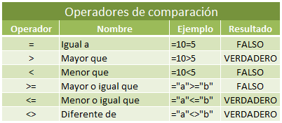
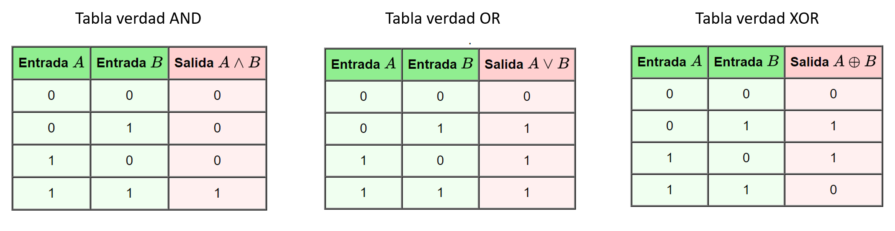

La CPU (Unidad Central de Proceso) o procesador es el componente encargado de controlar y ejecutar las operaciones/instrucciones que lleva a cabo el ordenador. Está constituido por dos partes:
-
Unidad de control (CU), es la parte que dirige las operaciones, para lo que dispone de una serie de registros:
-
Registro de instrucciones, encargado de alojar la instrucción que se está ejecutando.
-
Controlador y decodificador, que se encarga de interpretar la instrucción.
-
Secuenciador, que descompone la instrucción en las microinstrucciones que la componen.
-
Reloj, que proporciona una sucesión de impulsos eléctricos a intervalos regulares. En cada pulso se ejecuta una microinstrucción o instrucción.
- Registro-contador de programas, que contiene la dirección de memoria donde se encuentra la siguiente instrucción a ejecutar.
-
-
Unidad aritmético-lógica (ALU), es la parte que realiza las operaciones aritméticas (sumar, restar, multiplicar, dividir, exponenciación, etc.), de comparación y lógicas:

Según la arquitectura del microprocesador, existen microprocesadores:
-
RISC, que son procesadores con un conjunto simple de instrucciones. Siguen esta filosofía:
-
CISC, que son procesadores con un conjunto más complejo de instrucciones. Siguen esta filosofía:
-
x86 desarrollado por Intel para 32 bits.
-
x86_64, el sucesor para 64 bits y compatible con el anterior.
Ambas arquitecturas son las predominantes en los ordenadores personales.
-